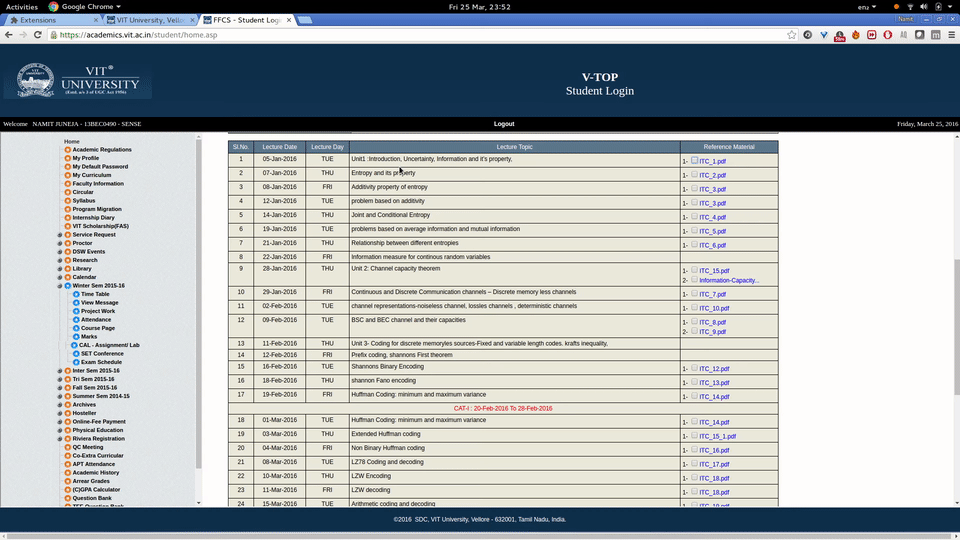

Fork me on GitHub
multiDownloader
A simple utility tool to help quickly download course material from VIT academics.
Download Chrome Extension
How does it work?
Simply check all the files you want to download
Then click on the multiDownload button at the bottom of the page
All files will be stored in a folder named "VIT Course Material" in your downloads folder.
